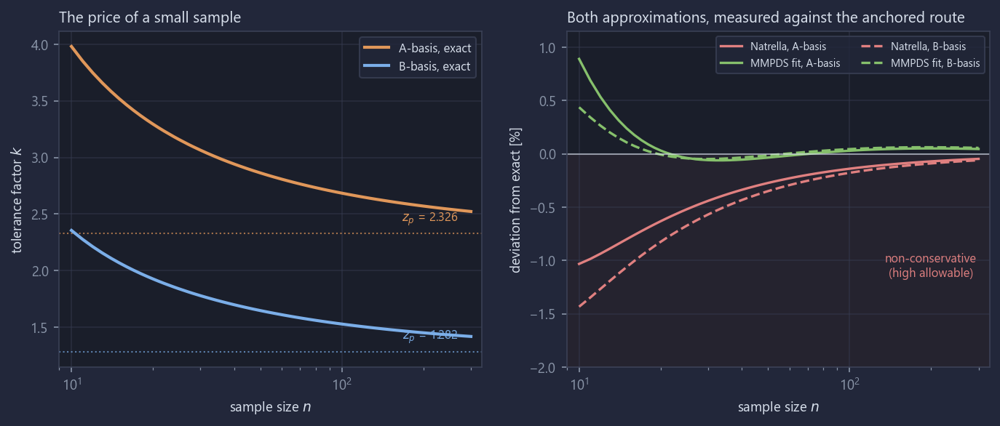
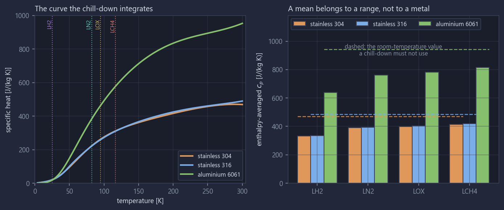
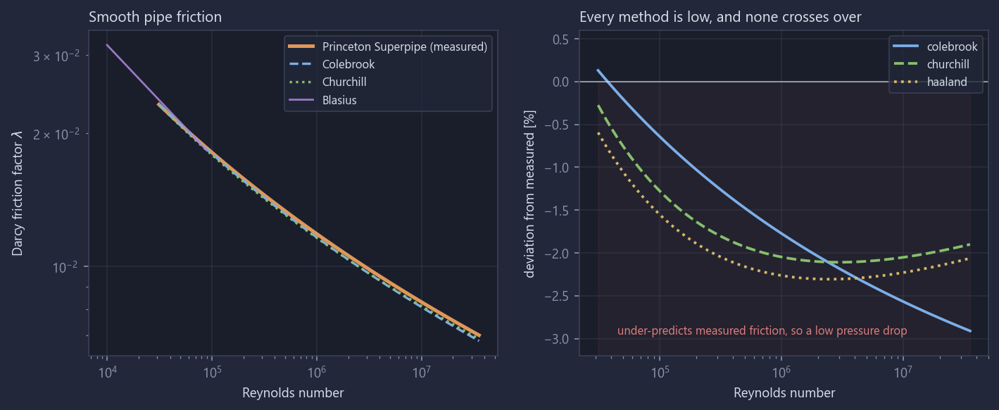
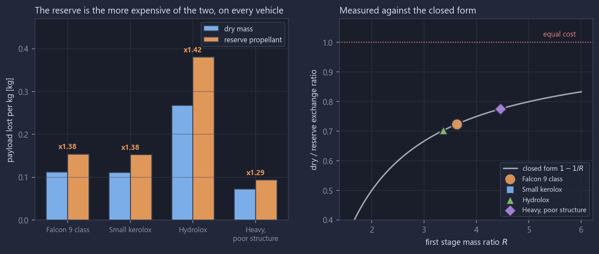
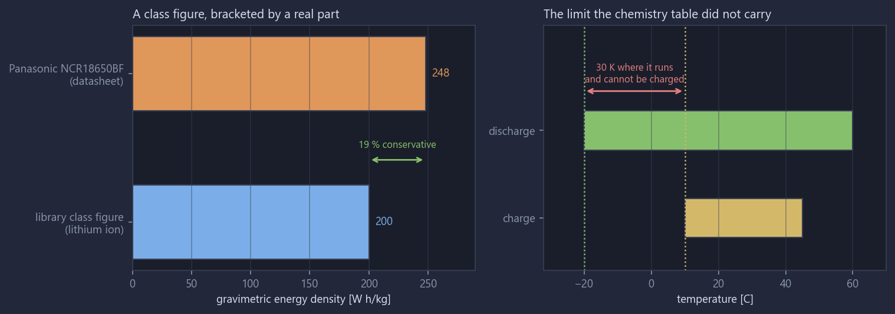
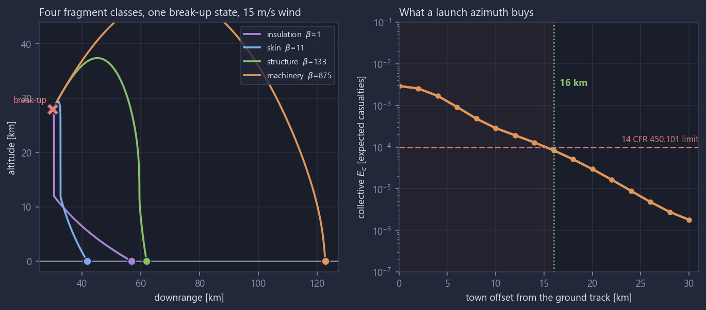

A walkthrough of the most recent work in a sixteen-domain launch vehicle engineering repository. Each item started as an entry in the unvalidated register: a number the library used, with nothing behind it. Closing them was supposed to be bookkeeping. Three of the six changed a result, one reversed an ordering the code enforced as a guard, and one turned a launch that cleared its licensing criterion into one that does not.
What it is, and the rule that shapes it
Sixteen domains covering a launch vehicle from propellant properties to range safety. Each
carries a class library, a worked example driven by a JSON asset, a documentation set written
against numbers the code produced, and a tiered test suite. The domains share a
common/ package so that a quantity is written down once: 316L's yield strength
lives in exactly one file, and a test asserts it.
The rule that shapes the work is that a tool checked only against itself has not been checked. Tests establish that code does what it was written to do. They say nothing about whether what it was written to do is right, and 666 passing tests once failed to catch a placeholder heat flux wrong by a factor of three, with a document written against its conclusion. Every domain must therefore compare a result against something published, or record in the validation register why it cannot.
validation/referenceCases.py may be adjusted to make a test pass. If a
tool disagrees with a reference, either the tool is wrong, the comparison is wrong, or the
disagreement is real and understood. All three are recorded outcomes. Editing the reference is
not.
Five stages, library before documents
Library first, so that every number a document cites has already been produced by running code. The fifth stage exists because the first four cannot catch a wrong model.
| Stage | Content | Done when |
|---|---|---|
| 1 | Component classes and a tiered test suite | Tests pass, uniquely named helper module in place |
| 2 | codeInterface.py worked example, driven by a JSON asset | Runs end to end, numbers verified |
| 3 | Documents, written against stage 2 numbers | Every numeric claim produced by code, every snippet executes |
| 4 | Verification, README status, commit | Links resolve, snippets run, full suite green |
| 5 | Validation against published hardware | An external reference case, or a register entry saying why not |
It is establishing that it is the same quantity. The propulsion library models a thrust chamber; a published engine specific impulse is a whole-engine figure that includes the cycle. RS-25 is closed cycle and validates the library to 1.7 %. F-1 is open cycle and disagrees by 8.1 %, and is kept in the reference set precisely because it marks the boundary of what the library covers.
aerospaceMaterials · the statistic every strength number rests on
A material property measured on twenty specimens produces twenty numbers. A design needs one, and the one it needs is not the average: the part that flies was not one of the twenty tested. That statement is a one-sided lower tolerance limit.
The entire content of the method is in $k$. It has to account for two separate uncertainties at once: how far into the tail the required exceedance sits, and how badly the sample mean and standard deviation might misrepresent the population. Three routes to it are implemented, and a test used to assert that they agreed with each other.
The anchor is a NIST/SEMATECH worked example that prints every intermediate, so the comparison reaches the noncentral $t$ quantile itself rather than stopping at the answer. That matters because $k$ is a ratio, and a compensating pair of errors in the noncentrality parameter and in the quantile would reproduce it while getting both halves wrong.
| Quantity | NIST published | Computed here | Error |
|---|---|---|---|
| $a$ | 0.9356 | 0.9356 | 0.00 % |
| $b$ | 1.5165 | 1.5165 | 0.00 % |
| $\delta$ | 8.4037 | 8.4037 | 0.00 % |
| Noncentral $t$ quantile | 12.28834 | 12.28834 | 0.00 % |
| $k$ from Natrella | 1.8752 | 1.8752 | 0.00 % |
| $k$ from noncentral $t$ | 1.8740 | 1.8740 | 0.00 % |
The example runs at 99 % confidence, which is not the library default of 95 %, so neither routine can reproduce it by having been written around the case it is tested on.

| $n$ | A-basis $k$ | B-basis $k$ | A / B |
|---|---|---|---|
| 10 | 3.9811 | 2.3546 | 1.69 |
| 20 | 3.2952 | 1.9260 | 1.71 |
| 30 | 3.0639 | 1.7773 | 1.72 |
| 50 | 2.8624 | 1.6456 | 1.74 |
| 100 | 2.6840 | 1.5267 | 1.76 |
| 300 | 2.5219 | 1.4169 | 1.78 |
The class refuses to do harm rather than reporting a number. It raises below $n = 10$ and warns below 100 specimens or fewer than 10 lots. An A-basis allowable from a sample of five is the one output of this domain that could cause real damage: it would carry the authority of a statistical allowable and the content of a guess.
common · propulsion/ignitionAndStart · how much propellant a chill-down boils away
Loading a cryogenic engine means cooling the hardware to the propellant's boiling point, and the propellant that does the cooling is boiled off and vented. Sizing that load needs the enthalpy the metal has to give up.
Specific heat is the property that behaves least like its room-temperature value. 304 stainless is 470 J/(kg·K) at room temperature and 248 at the liquid oxygen boiling point. A handbook value over the whole range overstates the stored enthalpy by roughly a third. The library used to carry a constant mean per material to correct for that.

| Material | LH2 [J/(kg K)] | LN2 | LOX | LCH4 | At 293 K | Spread |
|---|---|---|---|---|---|---|
stainless 304 | 331.4 | 390.0 | 399.5 | 413.0 | 470.5 | 1.25x |
stainless 316 | 335.1 | 394.4 | 404.2 | 418.5 | 485.4 | 1.25x |
aluminium 6061 | 638.1 | 761.0 | 782.7 | 814.3 | 943.1 | 1.28x |
The old constant, quoted over the oxygen range, overstated a hydrogen chill-down by 16 % because it never saw the part of the curve below 90 K where specific heat collapses.
316 stainless is published as two curve fits meeting at 50 K. Both are carried rather than only the upper one, because the joint is a check on the transcription that costs one assertion: a wrong coefficient anywhere shows up as a step at 50 K that neither set can hide. The two agree there to 0.2 %.
fluidSystems · the one term in a feed line that is a model rather than a definition
A feed line pressure drop is Darcy-Weisbach, and every term in it is a definition except the friction factor. The retrofit list asked for Crane TP-410 worked examples. TP-410 is not openly available and no reproducible example from it could be found, so the anchor became the thing its friction chart approximates: measured smooth pipe friction from the Princeton Superpipe, over 31,000 to 35,500,000 in Reynolds number.
The right-hand form is what the Colebrook equation reduces to at zero roughness, and those two constants are the whole difference. They were fitted an order of magnitude lower in Reynolds number than the Superpipe reached.

| Reynolds number | Superpipe $\lambda$ | Colebrook $\lambda$ | Colebrook error | Churchill error |
|---|---|---|---|---|
| 3.13e+04 | 0.02322 | 0.02325 | +0.13 % | -0.27 % |
| 1.00e+05 | 0.01811 | 0.01799 | -0.64 % | -1.27 % |
| 1.00e+06 | 0.01186 | 0.01165 | -1.77 % | -2.05 % |
| 1.00e+07 | 0.00832 | 0.00810 | -2.57 % | -2.05 % |
| 3.55e+07 | 0.00700 | 0.00679 | -2.91 % | -1.90 % |
Laminar flow is the only place in the domain where a pressure drop has an exact answer, which makes it the check on everything rather than on one term. Velocity from mass flow, the Reynolds number, the $64/\mathrm{Re}$ factor and the Darcy-Weisbach assembly all have to be right together. A factor of four anywhere, a radius used where a diameter belongs, or a Fanning factor read as a Darcy one all fail it by a wide margin.
$$\Delta p = \frac{128\,\mu Q L}{\pi D^4} \tag{5}$$
The library matches to one part in a million, and the residual is the density being re-evaluated along the marched line rather than an error. The exponents are asserted alongside the value: fourth power in diameter, first power in length and in flow.
One incidental finding: the Prandtl smooth-pipe intercept the Colebrook equation actually reduces to is $2\log_{10}(2.51) = 0.799347$, not the 0.8 that gets quoted. The rounding is in the textbook rather than in the equation.
vehicleArchitecture · recoveryAndReusability · what recovering a booster costs
Two things are given up to recover a stage: dry mass carried the whole way up, and propellant reserved for the boost-back, entry and landing burns. Converting each into payload needs an exchange ratio, and those are properties of the vehicle rather than of the recovery system. They were representative defaults, with a plausible reason written beside them.
What actually separates them is that added dry mass raises the first stage initial mass and its burnout mass together, while reserved propellant is already aboard and raises the burnout mass alone. Differentiating the stage contribution $c\ln(I/F)$:
$1 - 1/R$ is below one for any stage that burns any propellant at all, so a kilogram of reserve propellant always costs more payload than a kilogram of dry mass, on every vehicle, and relatively more the smaller the mass ratio of the stage carrying it. The offsetting rise in initial mass is what dry mass gets and reserve does not.

| Vehicle | First stage $R$ | Dry [kg/kg] | Reserve [kg/kg] | Measured ratio | $1 - 1/R$ | Error |
|---|---|---|---|---|---|---|
| Falcon 9 class | 3.626 | 0.1115 | 0.1540 | 0.7242 | 0.7242 | 0.0004 % |
| Small kerolox | 3.651 | 0.1106 | 0.1524 | 0.7261 | 0.7261 | 0.0005 % |
| Hydrolox | 3.369 | 0.2674 | 0.3803 | 0.7032 | 0.7032 | 0.0005 % |
| Heavy, poor structure | 4.460 | 0.0727 | 0.0937 | 0.7758 | 0.7758 | 0.0004 % |
Tuning the ratios until the budget reproduced the published penalty and then reporting the agreement would be calibration presented as validation. Computing them from the vehicle and inverting the one quantity left says what the stage must be doing, and the delta-V check is what separates a descent profile from an artefact of the arithmetic.
electricalPower · whether a representative number is representative
The battery tables carry a specific energy per chemistry rather than per part number. That is the right shape for a sizing library and it is also a claim nothing checked. One real cell cannot validate a class figure; it can say whether the class figure errs the right way, which is the only question a representative number has to answer.

| Quantity | Datasheet | Note |
|---|---|---|
| Rated capacity | 3.200 A h | at 20 C |
| Typical capacity | 3.350 A h | at 25 C, 4.7 % higher |
| Nominal voltage | 3.6 V | |
| Maximum mass | 46.5 g | bare cell, without tube |
| Gravimetric energy density | 248 W h/kg | library class figure is 200, so 19 % conservative |
| Volumetric energy density | 677 W h/l | |
| Charge temperature | 10 to 45 C | a hard limit, not a derating curve |
| Discharge temperature | -20 to 60 C | matches the library low-temperature limit exactly |
rangeSafetyAndFTS · the number a public risk analysis multiplies everything by
A public risk analysis needs the probability that debris from a destruct reaches each populated region. That number was an input, and the register called building it the largest single piece of unbuilt work the repository implied. It is also the weakest link in the calculation, because everything else is multiplied by it.
The ballistic coefficient is the whole model. It decides how much of its downrange velocity a fragment keeps, how long it falls, and therefore how far the wind carries it. The drag area $C_d A$ is not split, because a tumbling plate has no single reference area and its drag coefficient is an average over attitude.

| Class | Count | $\beta$ [kg/m2] | $v_t$ [m/s] | Fall [s] | Impact [km] | Wind drift [km] | Scatter set by |
|---|---|---|---|---|---|---|---|
insulation | 400 | 1.3 | 4.6 | 2687 | 56.8 | 26.46 | wind |
skin | 180 | 10.9 | 13.2 | 963 | 41.8 | 9.18 | wind |
structure | 40 | 133.3 | 46.2 | 342 | 62.1 | 2.45 | wind |
machinery | 6 | 875.0 | 118.4 | 219 | 122.7 | 0.65 | destruct |
Computing the impact probabilities rather than assuming them changed the answer. Every assumed value in the worked case was the wrong size, and with the coastal town under the ground track the launch is not licensable, by a factor of thirty on the 14 CFR 450.101 collective criterion. The relationship is linear in failure probability, so no vehicle reliability recovers it.
The town has to sit 16 km off the ground track, and that is a computed distance rather than a rule of thumb.
It is bought against the cross-range dispersion of the light debris rather than against the footprint width. The footprint is 4.5 km wide, so a naive reading says five kilometres of offset is plenty. It is not, because the width is the destruct throw and the thing that actually reaches sideways is the wind uncertainty acting on 400 insulation panels for forty five minutes. A wind error is a vector, and its cross-range component is as large as its downrange one.
recoveryAndReusability falls an entry through rather than being written twice.
Four classes propagated deterministically is a coverage limitation and not an accuracy one: a
real footprint is continuous and this one has four modes.
The register, and one gap that did not close
| Domain | Level reached | What still limits it |
|---|---|---|
aerospaceStructures | standard | The SP-8007 shell buckling curve itself is unvalidated. Reproducing it to 1e-4 proves the implementation and nothing about the correlation |
thermalManagement | hardware | Radiation path only. Conduction and the contact conductance table remain unchecked |
fluidSystems | hardware | Properties and smooth pipe friction. The roughness branch and the fitting loss coefficients are unanchored, and the loss coefficients are the larger of the two |
environmentsAndLoads | hardware | Random vibration only. Acoustics and shock remain unchecked |
aerospaceMaterials | standard | Statistics only. The anchor says nothing about normality, lot pooling, or any knockdown applied afterwards |
fluidSystemsTesting | internal | Process domain, lowest priority |
The most consequential unvalidated number in the repository is the SP-8007 shell buckling knockdown. It converts a classical stress that overpredicts by four and a half into a design value, more than one domain depends on it, and reproducing the published curve exactly says nothing about whether the curve is right.
Reaching for an anchor was expected to confirm the numbers and instead changed three results, reversed one ordering the code enforced as a guard, and made one launch unlicensable. The common thread is not that the old numbers were badly chosen. It is that a plausible reason written next to a wrong number is harder to catch than a bare number, and the reserve propellant exchange ratio sat behind one through a full domain build.